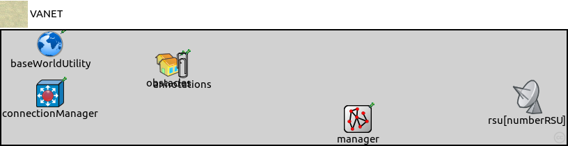
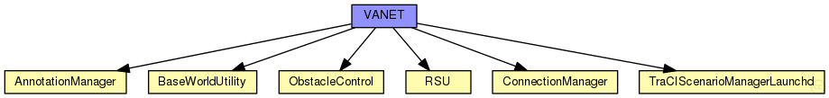
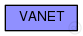

This documentation is released under the Creative Commons license
This documentation is released under the Creative Commons licenseTODO auto-generated type
The following diagram shows usage relationships between types. Unresolved types are missing from the diagram. Click here to see the full picture.
The following diagram shows inheritance relationships for this type. Unresolved types are missing from the diagram. Click here to see the full picture.
| Name | Type | Default value | Description |
|---|---|---|---|
| numberRSU | int | 0 |
| Name | Value | Description |
|---|---|---|
| isNetwork | ||
| display | i=background/green |
| Name | Type | Default value | Description |
|---|---|---|---|
| rsu.appl.headerLength | int |
length of the application message header (in bits) |
|
| rsu.nic.phy80211p.coreDebug | bool | false |
debug switch for core framework |
| rsu.nic.phy80211p.recordStats | bool | false |
enable/disable tracking of statistics (eg. cOutvectors) |
| rsu.nic.phy80211p.headerLength | int | 46 bit |
defines the length of the phy header (/preamble) |
| rsu.nic.phy80211p.usePropagationDelay | bool |
Should transmission delay be simulated? |
|
| rsu.nic.phy80211p.thermalNoise | double |
the strength of the thermal noise [dBm] |
|
| rsu.nic.phy80211p.useThermalNoise | bool |
should thermal noise be considered? |
|
| rsu.nic.phy80211p.analogueModels | xml |
Specification of the analogue models to use and their parameters |
|
| rsu.nic.phy80211p.decider | xml |
Specification of the decider to use and its parameters |
|
| rsu.nic.phy80211p.sensitivity | double |
The sensitivity of the physical layer [dBm] |
|
| rsu.nic.phy80211p.maxTXPower | double |
The maximum transimission power of the physical layer [mW] |
|
| rsu.nic.phy80211p.timeRXToTX | double | 0 | |
| rsu.nic.phy80211p.timeRXToSleep | double | 0 |
Elapsed time to switch from receive to sleep state |
| rsu.nic.phy80211p.timeTXToRX | double | 0 |
Elapsed time to switch from send to receive state |
| rsu.nic.phy80211p.timeTXToSleep | double | 0 |
Elapsed time to switch from send to sleep state |
| rsu.nic.phy80211p.timeSleepToRX | double | 0 |
Elapsed time to switch from sleep to receive state |
| rsu.nic.phy80211p.timeSleepToTX | double | 0 |
Elapsed time to switch from sleep to send state |
| rsu.nic.phy80211p.initialRadioState | int | 0 |
State the radio is initially in (0=RX, 1=TX, 2=Sleep) |
| rsu.nic.phy80211p.radioMinAtt | double | 1.0 |
radios gain factor (attenuation) while receiving |
| rsu.nic.phy80211p.radioMaxAtt | double | 0.0 |
radios gain factor (attenuation) while not receiving |
| rsu.nic.phy80211p.nbRadioChannels | int | 1 |
Number of available radio channels. Defaults to single channel radio. |
| rsu.nic.phy80211p.initialRadioChannel | int | 0 |
Initial radio channel. |
| rsu.nic.mac1609_4.notAffectedByHostState | bool | false | |
| rsu.nic.mac1609_4.coreDebug | bool | false |
debug switch |
| rsu.nic.mac1609_4.headerLength | double | 0 bit |
length of the MAC packet header (in bits) |
| rsu.nic.mac1609_4.address | string | "auto" |
MAC address as hex string (12 hex digits), or "auto". "auto" values will be replaced by a generated MAC address in init stage 1. |
| rsu.nic.mac1609_4.useServiceChannel | bool | true |
cycle between an SCH and the CCH (or stay on CCH all the time) |
| rsu.nic.mac1609_4.serviceChannel | int | 1 |
the service channel this maclayer listens on |
| rsu.nic.mac1609_4.debug | bool | false |
debug switch |
| rsu.nic.mac1609_4.bitrate | double | 18 Mbps |
bit rate |
| rsu.nic.mac1609_4.syncOffset | double | 0.0003s |
little asynchronization between cars |
| rsu.nic.mac1609_4.txPower | double |
tx power [mW] |
|
| rsu.nic.mac1609_4.queueSize | int | 0 | |
| baseWorldUtility.playgroundSizeX | double |
x size of the area the nodes are in (in meters) |
|
| baseWorldUtility.playgroundSizeY | double |
y size of the area the nodes are in (in meters) |
|
| baseWorldUtility.playgroundSizeZ | double |
z size of the area the nodes are in (in meters) |
|
| baseWorldUtility.useTorus | bool | false |
use the playground as torus? |
| baseWorldUtility.use2D | bool | false |
use a 2-dimensional world? |
| connectionManager.coreDebug | bool |
debug switch for core framework |
|
| connectionManager.sendDirect | bool |
send directly to the node or create separate gates for every connection |
|
| connectionManager.pMax | double |
maximum sending power used for this network [mW] |
|
| connectionManager.sat | double |
minimum signal attenuation threshold [dBm] |
|
| connectionManager.alpha | double |
minimum path loss coefficient |
|
| connectionManager.carrierFrequency | double |
minimum carrier frequency of the channel [Hz] |
|
| connectionManager.drawMaxIntfDist | bool | false |
should the maximum interference distance be displayed for each node? |
| manager.debug | bool | false |
emit debug messages? |
| manager.connectAt | double | 0s |
when to connect to TraCI server (must be the initial timestep of the server) |
| manager.firstStepAt | double | -1s |
when to start synchronizing with the TraCI server (-1: immediately after connecting) |
| manager.updateInterval | double | 1s |
time interval of hosts' position updates |
| manager.moduleType | string | "inet.nodes.wireless.WirelessHostSimplified" |
module type to be used in the simulation for each managed vehicle |
| manager.moduleName | string | "host" |
module name to be used in the simulation for each managed vehicle |
| manager.moduleDisplayString | string | "i=misc/node2;is=vs;r=0,,#707070,1" |
module displayString to be used in the simulation for each managed vehicle |
| manager.host | string | "localhost" |
sumo-launchd.py server hostname |
| manager.port | int | 9999 |
sumo-launchd.py server port |
| manager.launchConfig | xml |
launch configuration to send to sumo-launchd.py |
|
| manager.seed | int | -1 |
seed value to set in launch configuration, if missing (-1: current run number) |
| manager.autoShutdown | bool | true |
Shutdown module as soon as no more vehicles are in the simulation |
| manager.margin | int | 25 |
margin to add to all received vehicle positions |
| manager.roiRoads | string | "" |
which roads (e.g. "hwy1 hwy2") are considered to consitute the region of interest, if not empty |
| manager.roiRects | string | "" |
which rectangles (e.g. "0,0-10,10 20,20-30,30) are considered to consitute the region of interest, if not empty |
| manager.penetrationRate | double | 1 |
the probability of a vehicle being equipped with Car2X technology |
| manager.numVehicles | int | 0 | |
| manager.useRouteDistributions | bool | false | |
| manager.vehicleRngIndex | int | 0 |
index of the RNG stream to be used, all random numbers concerning the managed vehicles |
| obstacles.debug | bool | false |
emit debug messages? |
| obstacles.obstacles | xml | xml(" |
obstacles to add at startup |
| annotations.debug | bool | false |
emit debug messages? |
| annotations.draw | bool | false |
draw annotations? |
| annotations.annotations | xml | xml(" |
annotations to add at startup |
// // TODO auto-generated type // network VANET { parameters: @display("i=background/green"); int numberRSU = default(0); submodules: rsu[numberRSU]: RSU; baseWorldUtility: BaseWorldUtility { @display("p=70,20"); } connectionManager: ConnectionManager { @display("p=70,91"); } manager: TraCIScenarioManagerLaunchd { @display("p=512,128"); } obstacles: ObstacleControl { @display("p=240,50"); } annotations: AnnotationManager { @display("p=260,50"); } connections allowunconnected: }
This documentation is released under the Creative Commons license